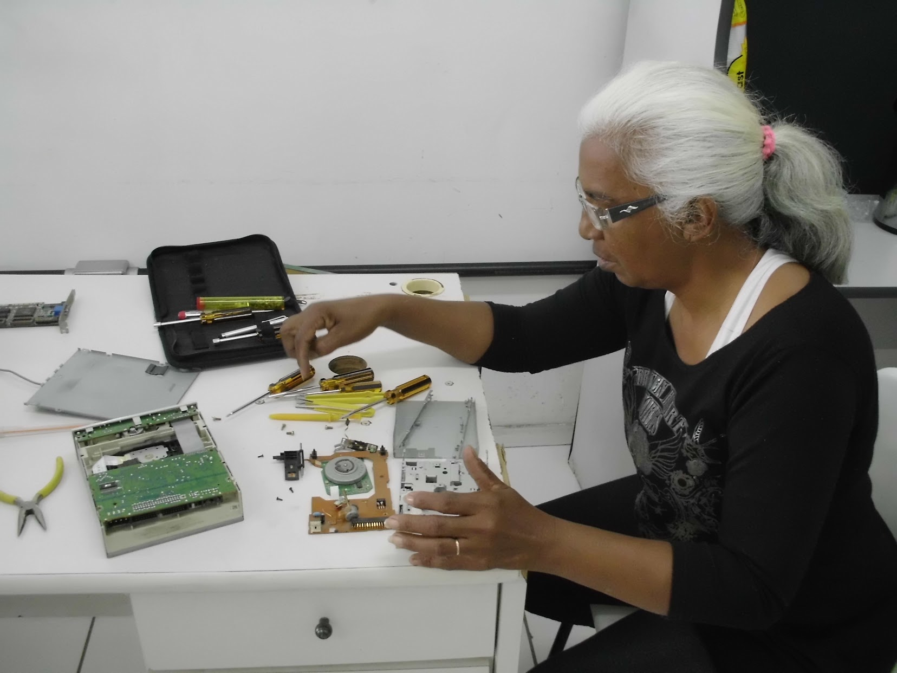

Do que adianta saber o nome de todos os componentes de uma placa mãe, almejar o mercado de trabalho e não se apropriar da lógica que a tecnologia tem sob nossas relações? @ Isaac Filho.
Podemos conhecer objetos de qualquer tipo somente na medida em que somos capazes de produzi-los. @Werner Stark, em The Sociology of Knowledge.
Webert voltou a puxar a conversa do Raspberry Pi, mostrando esse vídeo. Enquanto isso, em threads paralelas mas não dissociadas...
Mbraz compartilhou imagens das oficinas que aconteceram em Osasco...

Marcos Egito as experimentações colaborativas e as interações do Konesans...